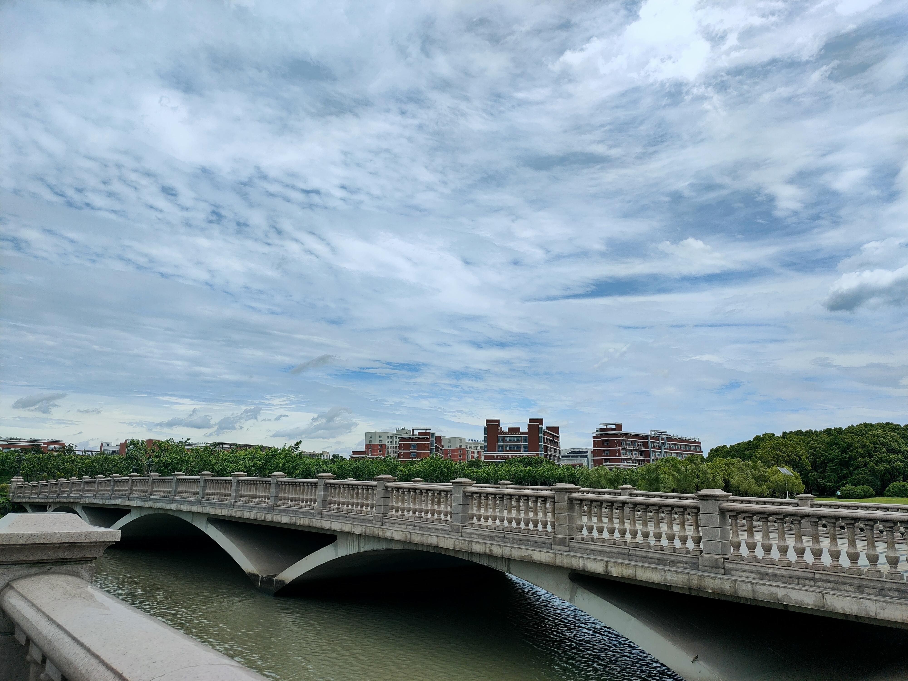

22_Blog
关于七日谈的一点思考
思考过这个是发在QQ上还是写在blog上，我发现我愈发没有发QQ或者pyq的动力了，可能后面也会没有发blog的动力（笑）
怎么说呢，挺复杂的
事实上和牵线人聊的挺开心的，哈哈
差不多离这个活动开始过去了正好一周吧
记得当时牵线人问我，会不会介意和异性有近距离接触
当时我说不太会吧，因为平时和身边的女生都正常在交流
但是后面我意识到，我自己并不是很习惯去和异性有一些比较亲密的举动，哈哈，可能我一直都是这样，我妹妹除外
总体上这次活动对我而言谈不上成功吧，想了想是多方面的原因
首先是我上面提到的，这种感觉
然后是我个人的，怎么说呢，对于这种形式不是那么适应，就像生活本来的轨道，七日谈将我从轨道上偏离，但是惯性之下，我不太愿意去这样做。七日谈这个活动说不谈感情吧，其实很多活动的形式是在谈感情，说是在谈感情吧，我又不太习惯这种任务式的地去谈感情。一方面我对于感情的态度有一些变化，另一方面，我平常交友的方式和这个又不太一样，就是有点别扭
还有就是和我partner之间的，可能两个人之间的共同语言不是很多，毕竟从许多的角度来说，生活实际上接近于两条平行线，加之她可能比较内向，我并不是很清楚该怎么去聊，主要我个人的生活面算是比较窄的，平时就历史、CS、羽毛球、还有关于人生的一些思考，当然还有很多别的，但是这个怎么说呢，更多的时候是我单方面地在聊，所以别的那些是需要对话的（像我和牵线人一样。。），真的要让我不需要反馈，一个人撑起一场对话，和一个不是很熟悉的人，我只能拿那些东西出来，但是很多东西我思考的怎么说呢，我感觉是挺深的，对于不是很感兴趣的人来说也是挺无聊的
像partner之前问我全球化的趋势的一个问题，我意识到她在尝试去做一个交流，但是于我而言，这个问题我事实上没什么兴趣去讨论，因为这个事实上是一个谁都说不清楚的事情，只有再过五年、十年才能够有答案。毫不意外，这是马原的pre，这种红课着实没什么意思，很多东西都是很无聊，很空洞的，像这种分析时事热点的东西，真的就是你想什么，然后去找材料支撑，一点意义都没有我高中的时候还在思考这方面的问题，后来就觉得腻了，更加倾向于去接触一手材料、丰富认知，而不愿意去下结论。
但是从一个七日谈参与者的角度来说，这不仅仅是我一个人的事情，还涉及到我的partner，牵线人和组织者的辛苦付出，所以我会面对这些问题，我不能回避掉它
怎么说呢，我蛮感谢这次活动的，它给了我许多新的思考。从我发blog的频率就可以看出，这周和之前一段时间是很不一样的。事实上大一上也有这种感受，但是当时没有blog，也就不会发出来，但是大一上的一些思考最终呈现在了我最初的几篇blog上了。
七日谈也认识了新的同学，我希望能够继续保持联系，很多事情还是看缘分的，哈哈，缘分
也感到蛮抱歉的，因为我个人的一些原因吧，学业压力也比较大，事实上对致远也有一些看法，但是先这样吧，这一周实际上过的颇为一般，有些遗憾吧，对lyy和ksl感到深深的歉意。但我觉得这次不应该是终点，以后我还是要尝试去认识更多的人，但有些地方还不够成熟。。
也提醒我我的文学修养事实上蛮欠缺的，但是在这个环境之下，去读书，感觉好难，但不知道诶，好久没读过书了，立个flag，期末考完要多读书，事实上不需要期末，以后每周都可以读书，就不要再摸鱼了，像刷知乎这种无意义的事情还是换成电影或者书比较好，但是不知道可不可行
一张照片
今天七日谈算是总结大会？结束之后到图书馆的路上拍的

我感觉我更喜欢那种辽阔、宽广的景色，像我blog的几张背景图都是这样的，当然最好有太阳，今天阴天，没有太阳，有太阳更好，我喜欢皓日当空的晴朗，也喜欢日出的温婉，也喜欢落日的余晖
先这样吧，很多想法还不是很成熟，慢慢来，七日谈还没有结束，我还要想一想怎么收尾，这个真是太困难了。。真的困难
天哪，今天看了一下，访问数怎么179人次了，一个礼拜前还只有120的，果然这个东西要多更新外加大力推广吗，我是不是可以接广告了，哈哈
本博客所有文章除特别声明外，均采用 CC BY-SA 4.0 协议 ，转载请注明出处！